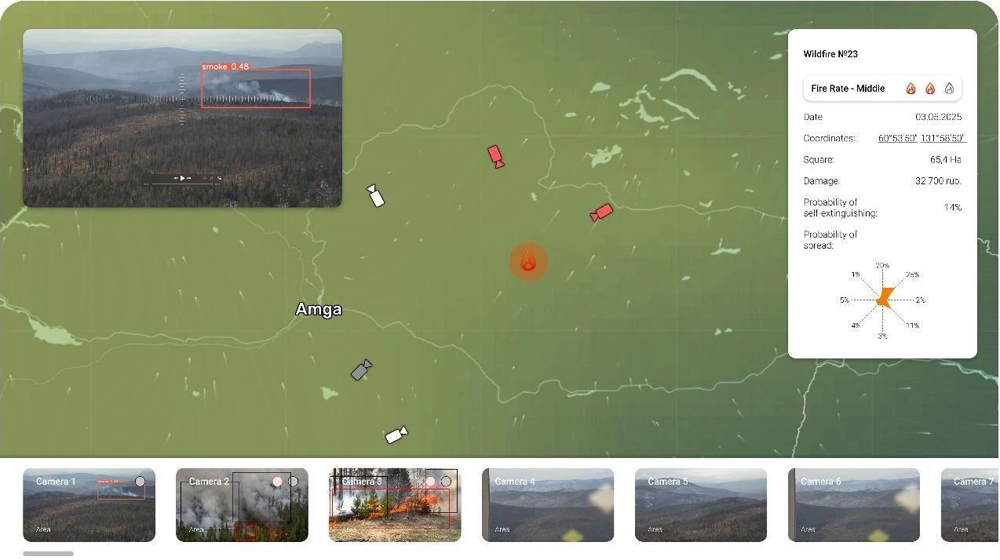

See the signal
Camera detection and satellite evidence help surface smoke and possible fire.
Early wildfire detection
Bring cameras, satellites, weather and maps into one incident brief. Give your operator the context to act.
Start with the infrastructure you already have.
Inspired by Zeus’s shield.
Built to protect land from fire.
01 / The operator bottleneck
Your team may already have the data. The challenge is connecting it: checking feeds, locating the incident and deciding what needs attention.
to verify a single signal
Described by one operator in our customer discovery interview.Check the alert
Switch between sources
Confirm the location
Escalate the decision
AeGIS is designed to bring these checks into one workflow.
02 / One incident. One clear view.
Review the signal, location and surrounding conditions in one place. Your operator stays in control of the response.

Camera detection and satellite evidence help surface smoke and possible fire.
Bring location, weather, terrain and nearby assets into the incident review.
Review the evidence and suggested next steps before approving the action.
Interface from project materials. Features and data sources depend on the deployment scope.
03 / Simple on the surface
Our target for preparing an incident brief.
To be validated in a live pilot.
Detection
Signal correlation
Risk context
Start with available sources.
Add integrations as your site needs them.
04 / Built around your operations
For teams monitoring large areas, valuable assets and communities — especially those already working with cameras or a control room.
Bring plantation and forest monitoring into a shared incident workflow.
Review wildfire signals in the context of assets and surrounding terrain.
Give monitoring teams a consistent way to verify and escalate incidents.
05 / A practical first step
We’re looking for pilot partners and local operating partners. Begin with a defined site, available infrastructure and a shared set of success criteria.
Discuss a pilotThe team reports satellite and camera field testing in Yakutia. The next step is validating a production deployment with a partner.
Agree coverage, cameras, available data and the operator workflow.
Discuss a pilot at direct cost. Scope and budget follow the site’s needs.
Track verification time, false alarms, coverage and operator workload.
06 / Before we talk
The starting point is your available infrastructure. We’ll review camera access, coverage and data compatibility together before defining the integration.
AeGIS supports the operator with evidence and context. Your team confirms the incident and approves the action.
Yes. A pilot can begin at one agreed site with a limited set of available sources. The scope can expand after evaluating the results.
We’ll walk through the operator workflow, discuss your current monitoring setup and identify what a useful pilot would need to demonstrate.
07 / Let’s build your first line of defence
Tell us what you monitor today.
Let’s explore what AeGIS could bring to your team.